Кортизол в слюне.
От теста
к числу.
Разрабатываем экспресс-тест, который объединяет иммунохроматографию и цифровой анализ с помощью смартфона.
Образец слюны. Тест-кассета. Цифровое считывание.

Аналитическая химия × Биотехнологии × Цифровой анализ
01 / О ПРОДУКТЕ
Лабораторный принцип.
Портативная концепция.
Мы создаём систему для количественного определения кортизола в слюне — от формирования сигнала на тесте до его программной обработки.
Слюна позволяет получить образец без забора крови. В проекте она используется как среда для анализа кортизола. Методика подготовки образца и условия измерения разрабатываются и требуют проверки.
Тест-кассета формирует аналитический сигнал, а смартфон с адаптером помогает стандартизировать съёмку. Веб-приложение обрабатывает изображение и рассчитывает концентрацию по калибровочной зависимости.
Сейчас — этап разработки
Методика требует валидации. Клиническая эффективность и характеристики системы пока не подтверждены.
02 / КАК ЭТО РАБОТАЕТ
Четыре шага
к измерению.
Тест и цифровое считывание —
части одной разрабатываемой системы.
- 01
Получение образца
Образец слюны собирается по протоколу, который будет установлен для методики.
- 02
Проведение теста
Образец вносится в тест-кассету. В ходе анализа формируется оптический сигнал.
- 03
Съёмка смартфоном
Адаптер предназначен для воспроизводимого положения кассеты при фотографировании.
- 04
Расчёт концентрации
Программа анализирует выбранную область и применяет калибровочную формулу.
03 / ТЕХНОЛОГИЯ
Химический сигнал.
Цифровая интерпретация.
В основе разработки — иммунохроматографический анализ (LFA). Специальные аналитические метки позволяют сформировать сигнал, доступный для оптической регистрации.
Перейти к приложениюИммунохроматографияТест-кассета и аналитические метки
Оптическая регистрацияСмартфон и адаптер для съёмки
Калибровочная зависимостьОбработка изображения → концентрация
Численные характеристики будут опубликованы после экспериментального подтверждения.
04 / ПРЕИМУЩЕСТВА КОНЦЕПЦИИ
Меньше барьеров
для исследования.
Свойства технологии и цели разработки,
которые мы объединяем в одном продукте.
- 01
Неинвазивный образец
Получение слюны не требует забора крови.
- 02
Смартфон как инструмент
Возможность использовать камеру для регистрации сигнала.
- 03
Цифровая обработка
Программный анализ выбранной области изображения.
- 04
Потенциал портативности
Компактная концепция теста и адаптера для съёмки.
- 05
Количественный подход
Расчёт концентрации с последующей валидацией методики.
05 / ВЕБ-ПРИЛОЖЕНИЕ
Изображение теста.
Данные для анализа.
Экспериментальный анализатор работает в браузере: открывает камеру или принимает фотографию, позволяет выбрать область изображения и анализирует цветовой сигнал.
Открыть приложение-анализатор ↗Приложение находится на стадии разработки и не предназначено для самостоятельной медицинской диагностики. Откроется в новой вкладке.
- 1
Откройте приложение
Перейдите в анализатор по кнопке.
- 2
Добавьте изображение
Разрешите доступ к камере или загрузите фотографию теста.
- 3
Выделите область
Укажите анализируемый участок изображения.
- 4
Посмотрите результат
Ознакомьтесь с расчётом по заложенной калибровочной формуле.
assets/analyzer-screenshot.png
06 / ПОДДЕРЖКА ПРОЕКТА
От научной идеи
к технологическому продукту.
Проект реализован при поддержке Фонда содействия инновациям в рамках программы «Студенческий стартап» мероприятия «Платформа университетского технологического предпринимательства» федерального проекта «Технологии».
assets/fsi-logo.svg
assets/platform-logo.svg
07 / КОНТАКТЫ
Давайте развивать
технологию вместе.
Открыты к диалогу с исследователями, технологическими партнёрами и инвесторами. Расскажите, как мы можем сотрудничать.
Контактное лицо — Виктория